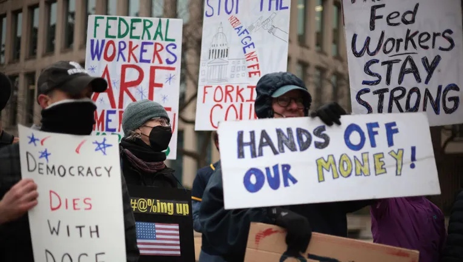
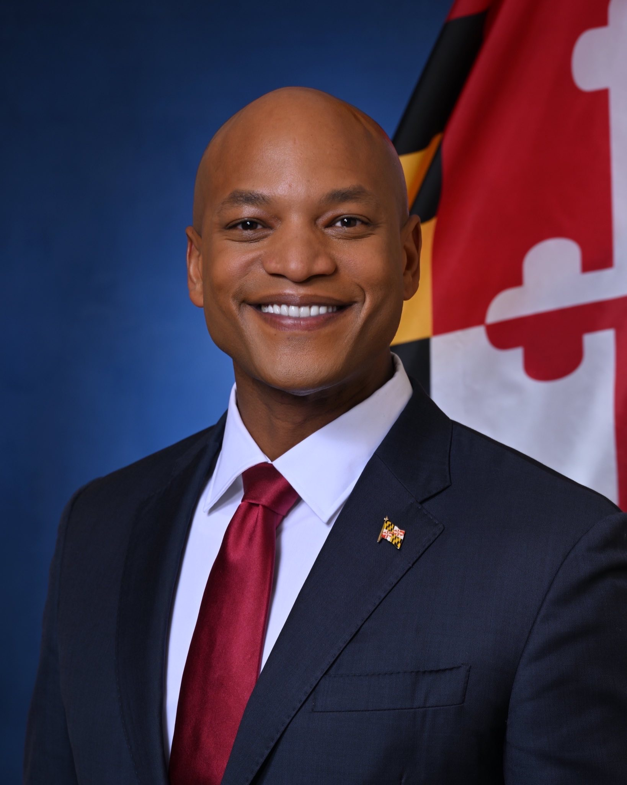

This increase in unemployment comes during the first year of the Trump Administration. President Donald Trump’s creation of the Department of Government Efficiency eliminated thousands of government jobs, which contributed to national unemployment.
Scott Kupor, the director of the U.S. Office of Personnel Management, told the New York Times that, by the end of the year, there will have been 300,000 federal jobs eliminated in 2025. He attributed most of these losses to the Department of Government Efficiency.
Kupor also told the New York Times that the civilian workforce has shrunk from 2.4 million when Trump took office to 2.1 million, due to cuts in the workforce.

Federal Workers Protest Layoffs
The national unemployment rate stands at 4.3% in August, according to the U.S. Bureau of Labor Statistics. Maryland’s unemployment rate is at 3.6% in August, according to the bureau.
According to a press release by Maryland’s Department of Labor, Maryland lost 2,500 federal jobs in August. Overall, the workforce decreased by 3,200 jobs in August.
Including August’s decline, since January, Maryland has lost 15,100 federal jobs, according to the press release.
According to data from the Bureau of Labor Statistics, Maryland is one of three states to have an unemployment rate increase in August. Maryland’s unemployment rate increased from 3.4% to 3.6%, according to the bureau.
In addition, the bureau of labor statistics reported that Maryland is one of 26 states to have a statistically significant unemployment rate change between August 2024 and August 2025. Maryland’s rate of unemployment increased from 3.2% to 3.6%, an increase of 0.4 in a year.
While the rate of unemployment in Maryland increased, when broken down by county, the increase in unemployment becomes more significant.
The largest increase is Baltimore City, which had an increase of 1.5 percentage points between March and August. St. Mary’s county increased by about 44% and Charles County increased by about 42%. The only county to decrease from March to August was Worcester County, which decreased by 1.4 percentage points and by 27%.
Aside from Worcester County, all counties in Maryland had an increase in unemployment rates between March and August. All counties, including Worcester, had an increase in unemployment between June and August.
In addition, many counties in Maryland have an unemployment rate higher than the national 4.3% rate in August. Most counties have an unemployment rate higher than the Maryland rate of 3.6% in August.

Governor Wes Moore
According to the press release, Maryland lost 2,000 private sector jobs and 1,200 public sector jobs. Driving the public sector loss is the 2,500 loss of federal jobs. Since January, Maryland has lost a total of 15,100 federal jobs, according to data from the Bureau of Labor Statistics.
Despite the loss of federal jobs, since the beginning of the Moore Administration, Maryland has gained a total of 96,000 jobs. However, the loss of federal jobs is outpacing the growth of private sector jobs, therefore causing the unemployment rate in Maryland to continue to rise.
Sectors with the most estimated losses in August since March were Administrative and Support and Waste Management and Remediation Services, with a loss of about 1,900 jobs, Government, with a loss of about 1,200 jobs, Health Care and Social Assistance, with a loss of about 1,000 jobs, and Other Services, with a loss of about 1,700 jobs.
Despite the creation of new jobs because of the Moore Administration, unemployment in Maryland is still rising. This is due to the massive cuts in federal jobs because, as so many people continue to get cut from their federal jobs, they fall into unemployment faster than new jobs can open.
Cuts to the federal workforce are happening faster than the creation of new jobs, causing unemployment to rise in Maryland.
Republican Maryland State Senator Justin Ready commented on the unemployment rates, blaming the Trump Administration for the problems.
“The August jobs report reflects the same alarming slowdown in the job market we started to see the previous month,” Hoyer said. “The American economy is flashing red lights as a product of this administration's disastrous policies.”